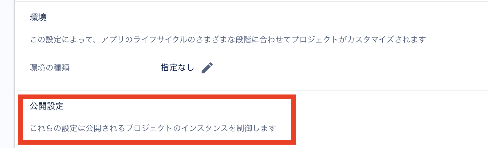

Firebaseの公開名を設定する方法
Contents
はじめに
Firebase Authenticationを使っていて、メールをユーザに送信したいケースがありました。
メールを送信する際にメールテンプレート内に %APP_NAME% の記述をすると該当のFirebaseプロジェクトのアプリケーション名を設定できるようです。
https://support.google.com/firebase/answer/7000714?hl=ja
しかし、Firebaseコンソールからアプリケーション名を設定する方法が分からなかったので調べてみました。
以下画像の 公開設定 がどうしても表示されませんでした。

調べたこと
まず調べると、Firebaseコンソールの「プロジェクトの設定」から「全般」タブにて 公開名 を設定するような情報がいくつか見つかりました。
しかし、私のFirebaseコンソールには 公開名 の設定項目が見当たりませんでした。
色々と調べてもどうやって設定するのかの情報がなく、FirebaseのHelpからGoogleにお問合せをすることにしました。
返答
問い合わせの翌日、早速以下のメール文章が返ってきました。
|
|
設定がFirebaseコンソール上ではなく、GoogleCloudConsole上で行うようです。
早速、この手順で設定を行っていました。
結論
こちらの手順でGoogleCloudから設定をこなうと、Firebaseコンソール上でも無事に 公開名 の設定ができるようになりました。
この設定を行い、無事に目的のメールテンプレートの %APP_NAME% にアプリケーション名を設定することができました。
Googleにお問合せをして、翌日に丁寧な返答がもらえてとても助かりました。 同じようにお困りの方がいたら参考になれば幸いです。
Author ken-aio
LastMod 2024-04-03